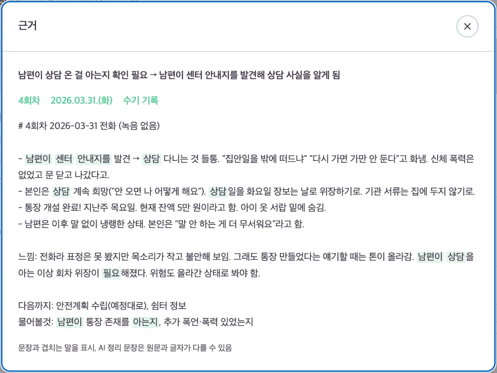
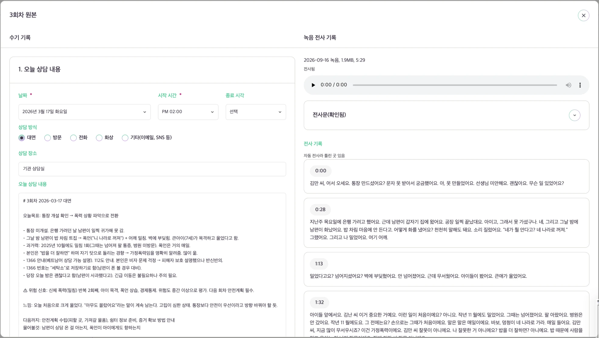

AI
AI가 도와주는 일
- 상담 기록 정리 상담 내용을 회차별로 보기 쉽게 정리합니다.
- 회차 간 흐름 연결 앞선 상담과 지금 상담에서 이어지는 내용을 찾습니다.
- 남은 항목 확인 아직 남아 있는 과제와 다음에 확인할 내용을 정리합니다.
상담 내용을 회차별로 기록하고, 이전 상담의 흐름을 이어서 볼 수 있습니다.
이번 상담에서 정한 과제와 다음에 이어갈 내용도 다음 회차에서 바로 확인할 수 있습니다.
사용해 보기를 눌러 확인해 보세요.
이미 계정이 있다면 로그인하고, 처음 이용한다면 기관 관리자의 초대 링크가 필요합니다.
회차별로 쌓인 기록이 다음 상담으로 이어지도록 돕습니다.
한 회차에서 나눈 이야기와 다음에 이어갈 내용을 다음 상담으로 연결합니다.
상담이 반복될수록 기록이 회차별로 쌓이고, 그동안의 변화와 흐름도 함께 남습니다.
회차마다 기록은 따로 남고, 그 사이를 잇는 일은 실무자의 몫으로 남습니다.
여러 회차의 기록을 다시 읽으며 최근 상황과 변화, 남아 있는 과제와 다음에 확인할 내용을 다시 추려야 합니다.
기록만으로는 왜 이런 이야기가 나왔고 무엇을 이어가야 하는지 알기 어려워, 이전 상담의 흐름을 다시 설명하고 파악하는 과정이 필요합니다.
수행할 과제, 다음에 물어볼 것, 상담 목표가 여러 회차에 흩어지면서 다음 상담에서 무엇을 확인해야 하는지 다시 찾아야 합니다.
문제는 기록이 없는 것이 아니라, 기록이 다음 회차로 이어지지 않는다는 데 있습니다.
회차별 기록을 이어서 보고, 다음 상담에 필요한 내용과 남아 있는 과제를 바로 확인할 수 있습니다.
회차별로 기록하고, 다음 회차로 이어갑니다.
상담 기록을 회차별로 정리해, 각 상담에서 어떤 이야기가 있었는지 빠르게 확인할 수 있습니다. 지난 회차의 흐름도 이어서 볼 수 있습니다.

각 회차에서 다시 봐야 할 내용과 주요 변화를 눈에 띄게 보여줍니다. 긴 기록을 처음부터 다시 읽지 않아도 핵심 내용을 확인할 수 있습니다.

녹음 전사문과 실무자가 직접 작성한 상담 기록을 함께 확인할 수 있습니다. 두 기록의 차이를 비교하면서 빠진 내용이나 다르게 기록된 부분도 살펴볼 수 있습니다.

AI가 정리한 내용을 그대로 확정하지 않습니다. 실무자가 확인하고 필요한 내용을 수정한 뒤 기록합니다.
기관의 실제 상담 흐름에 Relayer를 어떻게 적용할 수 있을지 함께 살펴보세요.